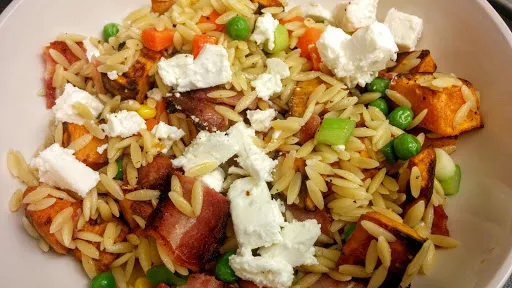

Sweet potato, bacon & orzo pasta salad

Servings: 4
Total: 30 mins
Ingredients
- 2 large sweet potatoes, peeled and cubed
- 2 tbsp olive oil
- 250 g orzo pasta
- 2 mugs frozen peas
- 200 g streaky bacon
- 6 spring onions
- 1 tbsp fresh mint
- 100 g feta cheese
Instructions
- Preheat oven to 200°C
- Mix the sweet potato with the
olive oil2 tbsp
, season with salt and pepper and place on a baking tray. Put in the oven for 25 minutes, or until tender and lightly browned.
- Meanwhile put the
pasta250 g
in boiling water and simmer for 3 minutes. Add peas2 mugs
for the last 2 minutes. Drain and return to pan.
- Fry or grill
bacon200 g
until crispy. Cut into bite sized pieces.
- Mix everything except the
feta100 g
together and season with salt and pepper.
- Crumble the
feta100 g
on top.
Nosh: Quick & Easy
Short Link
Long Link